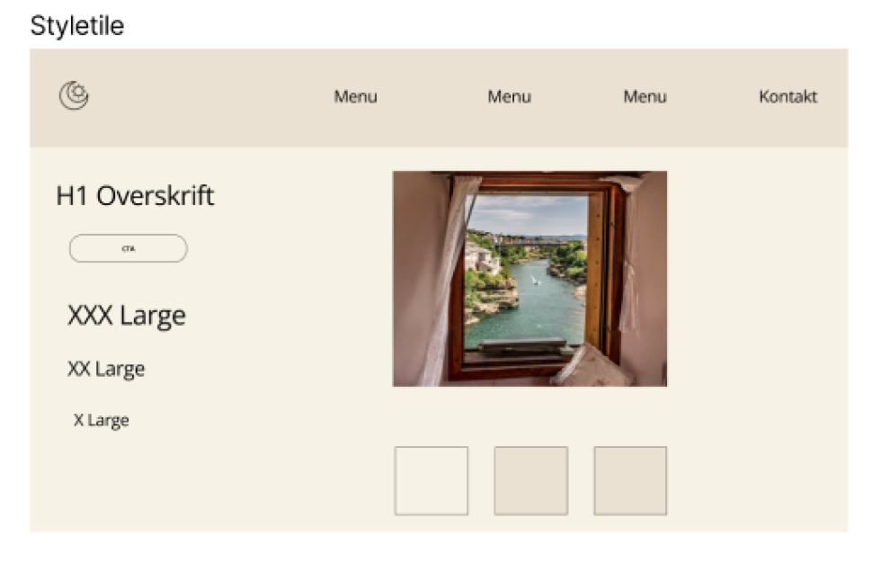

Grundlæggende UX/UI - emnesite
Rejseguide til Bosnien
I dette projekt har jeg designet og udviklet et website med udgangspunkt i et selvvalgt emne. Forløbet inkluderede research, idéudvikling, design af en digital prototype, kodning af et responsivt site samt afsluttende præsentation og dokumentation. Websitet fungerer på både mobil og desktop og har et tydeligt formål for brugeren. Her kan du se det færdige resultat samt materialer, der dokumenterer design og løsning.
Userstory
For at sikre, at mit website opfylder rejsendes behov, har jeg udviklet tre user stories, som hver især sætter ord på brugerens perspektiv og ønsker. Det har hjulpet mig med at sætte brugeren i centrum. Jeg har forestillet mig en rejsende, der er nysgerrig, men måske ikke kender så meget til Bosnien i forvejen. Derfor har jeg haft fokus på at skabe et site, der både informerer, inspirerer og guider brugeren på en overskuelig måde.
Moodboard & styletile
Jeg har lavet et moodboard for at samle og visualisere stemningen, farverne og den visuelle retning for mit website. Moodboardet fungerer som et kreativt værktøj, der hjælper mig med at holde fokus på den ønskede stil og tone gennem hele designprocessen. Det er en måde at oversætte idéer og følelser til konkrete billeder og farver, så jeg sikrer en rød tråd mellem indhold og design. Moodboardet jeg har lavet illustrerer stemningen og de visuelle elementer, jeg ønsker at arbejde med på mit site. Det indeholder billeder af traditionel bosnisk mad, natur og hverdagsliv fra bosnein.
Likert test af styletile
For at få feedback på mit design lavede jeg en brugertest baseret på en Likert-skala. Deltagerne skulle vurdere, i hvor høj grad de var enige i forskellige udsagn om sitets udseende og brugervenlighed. En Likert-skala er et effektivt værktøj til at måle holdninger og oplevelser. Den gør det nemt for brugerne at give nuanceret feedback – fra "Meget enig" til "Meget uenig". Metoden giver et hurtigt overblik over, hvordan designet bliver opfattet, og hvor der eventuelt er behov for justeringer. Testresultaterne viser, at 88,9 % var meget enige i, at designet er simpelt og nemt at bruge, og 88,9 % var også meget enige i, at designet virker moderne. Det tyder på, at mine designvalg fungerer godt og stemmer overens med brugernes forventninger. Feedbacken er vigtig for at kunne validere mit arbejde og sikre, at jeg bevæger mig i den rigtige retning frem mod det færdige site.
Wireframes, prototyper & layoutdiagrammer
Før jeg begyndte at kode min rejseguide til Bosnien, lavede jeg wireframes for at planlægge sidens grundstruktur. Det hjalp mig med at placere tekst, billeder og navigation klart, uden at fokusere på designdetaljer endnu. Herefter lavede jeg en klikbar digital prototype i Figma. Den gjorde det muligt at teste brugeroplevelsen og få feedback, så jeg kunne justere flowet og funktionerne, før jeg gik videre til kodningen. Til sidst brugte jeg layoutdiagrammer til at optimere min kode proces. Her planlagde jeg, hvordan jeg ville oprette forskellige CSS-classes og organisere elementerne i sectioner og div’er, så koden blev struktureret og let at arbejde videre med.